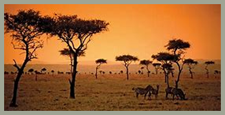
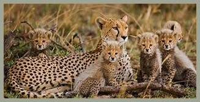
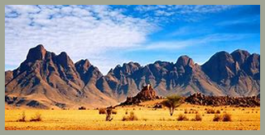

SAVANA

Vegetação
A vegetação das savanas é formada principalmente por gramíneas altas e árvores espaçadas, que resistem bem ao clima seco e aos incêndios naturais que ocorrem com frequência. Muitas plantas têm raízes profundas, cascas grossas e folhas resistentes, o que permite que elas sobrevivam em períodos longos de estiagem e se regenerem rapidamente após o fogo.

Fauna
A fauna das savanas é bastante diversificada e inclui alguns dos maiores animais terrestres do mundo. É comum encontrar elefantes, girafas, leões, zebras, antílopes e hienas, além de várias espécies de aves, répteis e insetos. Os animais costumam migrar em busca de água e alimento durante as épocas mais secas do ano, o que faz parte do equilíbrio natural desse ecossistema.
Clima
O clima das savanas é tropical, com duas estações bem definidas: uma chuvosa, geralmente no verão, e outra seca, no inverno. Durante o período seco, a paisagem fica mais árida, com a vegetação amarelada, e os incêndios naturais são comuns, desempenhando um papel importante na renovação da vegetação.

Importância Ecológica
A savana tem grande importância ecológica, pois abriga uma enorme variedade de espécies e mantém o equilíbrio entre o clima, o solo e os ciclos da água e dos nutrientes. Além disso, muitas comunidades humanas dependem diretamente desse bioma para a agricultura, a pecuária e outros usos sustentáveis dos recursos naturais.